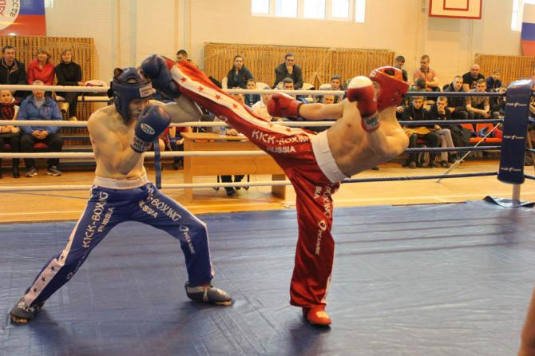
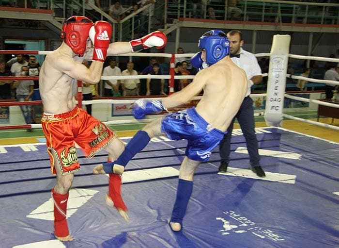
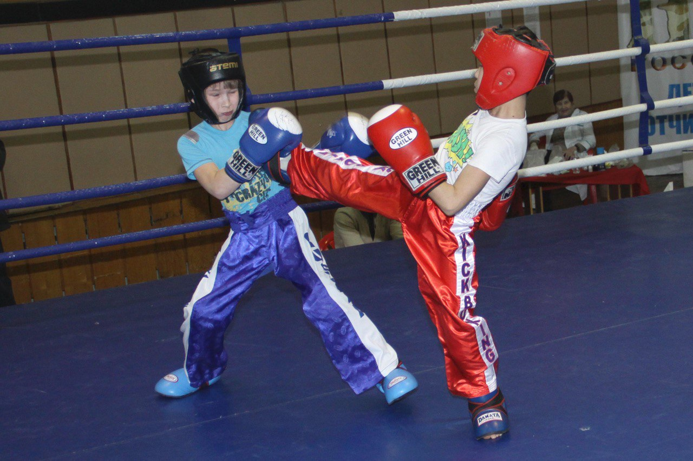
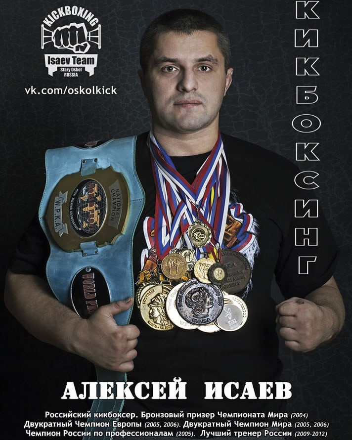
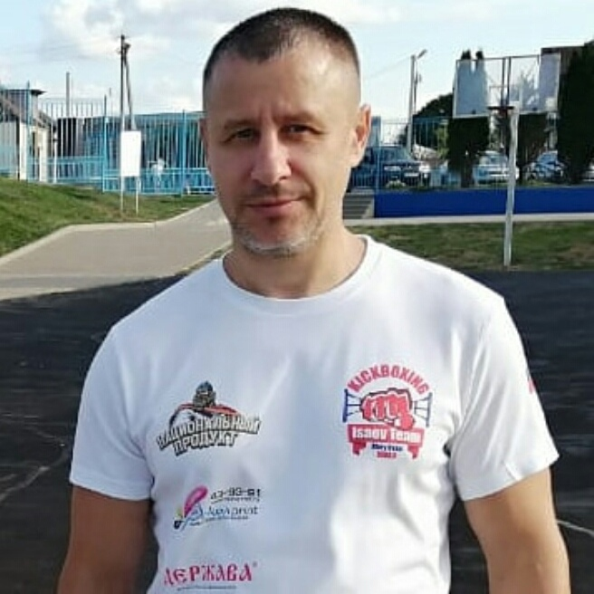

История кикбоксинга
Кикбоксинг зародился в Японии в 1960-х годах как смесь карате и бокса, объединяя лучшие приёмы этих единоборств. В 1970-80-х годах он быстро распространился в США и Европе, где стал популярным благодаря профессиональным турнирам и ярким боям. Впоследствии появились различные стили и правила, такие как фулл-контакт, лоу-кик и киклайт. Сегодня кикбоксинг — это признанный мировой спорт с миллионами поклонников, развивающийся и в России.
Виды кикбоксинга
Full Contact
Классический стиль с ударами в корпус и голову.
Low Kick
раздел в кикбоксинге, разрешающий наносить удары ногами по внешней и внутренней сторонам бедра или подсекать в голеностоп.
Kicklight
Стиль с ограниченной силой удара, хорошо подходит для новичков и любителей.

Isaev Alexey Leonidovich
Главный тренер

Vadim Vladimirovich
Тренер